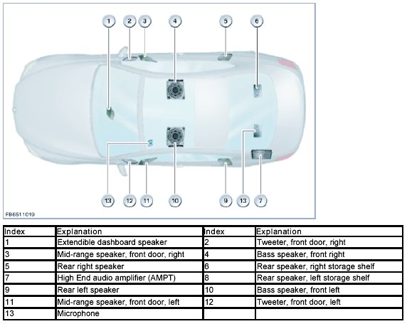
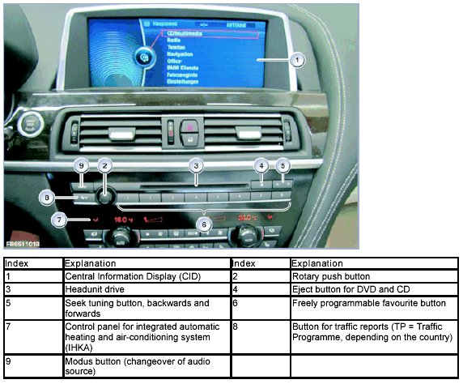
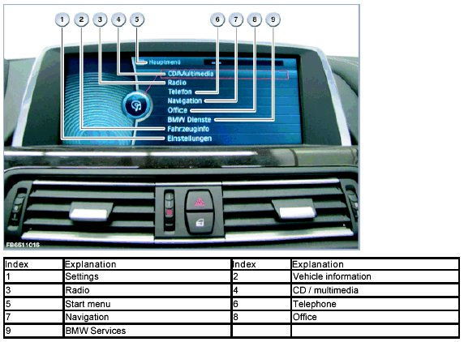
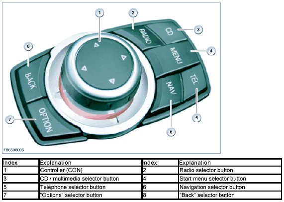
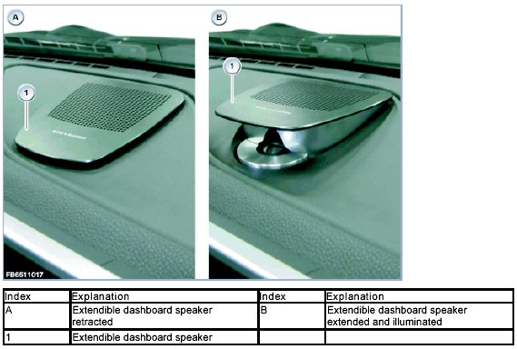
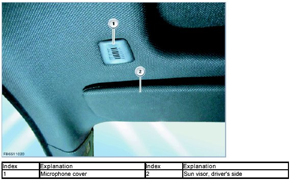
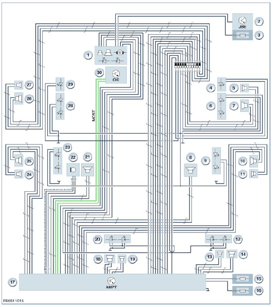
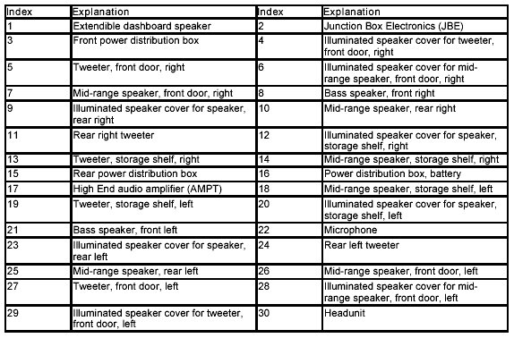

Bang and Olufsen High End Surround Sound System
Bang and Olufsen High End Surround Sound System
Bang and Olufsen High End Surround Sound System
Depending on the vehicle equipment, the audio playback can be optimized using the Bang and Olufsen High End Surround Sound System.
In addition to the "Bang and Olufsen" labelling on the speaker covers, this system has the following identifying features:
- Extendible dashboard speaker
- Illuminated speaker cover
- "Bang and Olufsen" menu item in the Central Information Display (CID)
The advantages and particular features of the vehicle equipment with the Bang and Olufsen High End Surround Sound System are:
- Linear playback
- Pulse response
- Low distortion
- High volume level
- Automatic volume control and tone setting
The following describes the Bang and Olufsen High End Surround Sound System using the example of F13.

Brief component description
The following components are described for the Bang and Olufsen High End Surround Sound System:
- High End audio amplifier (AMPT)
- Headunit
- Central Information Display (CID)
- Controller (CON)
- Extendible dashboard speaker
- Speakers
- Microphone
High End audio amplifier
High End audio amplifiers (AMPT) are audio amplifiers with active frequency diplexers. Active frequency diplexers achieve better acoustic results than passive frequency diplexers. The speakers that are suitable for the frequency are selectively activated. The active frequency diplexers transfer from the audio amplifier only the frequency range that can be optimally played back by the relevant connected speaker.
In F13, the active 16-channel High End audio amplifier (AMPT) supplies the following 16 speakers with a maximum power output of 1300 watts:
- 7 tweeter, 12.5 watts
- 7 mid-range speakers, 75 watts
- 2 bass speaker, 250 watts
The High End audio amplifier (AMPT) is a control unit in the MOST network with the following functions:
- Audio amplifier for high and mid-range speaker
- Audio amplifier for bass speaker
The class-D audio output stages of the High End audio amplifier (AMPT) have a significantly higher efficiency and therefore result in reduced power loss compared with traditional audio output stages.
Headunit
In principle, the structure of the headunit corresponds to that of a personal computer. Like a personal computer, the headunit contains the following components:
- Processor
- Main memory
- Hard disk
- Fan
The hard disk in the headunit is used to store the application software and other data.
The following applications are installed on the hard disk:
- Music library
The music collection is based on the audio data stored on the integrated hard disk.
- Music track database
Software for track identification using a music track database (Gracenote(R)).
- Navigation system (map data) and software (application software)
Full screen display possible: Zoomable assistance window with map view, journey planner, map data storage on the hard disk.
- Voice processing system
- Office (database with addresses)
The data is used for telephone and navigation, for example.
The headunit is the central control unit for the listed applications. For the purposes of picture signal transmission, the headunit is linked to the Central Information Display (CID). The headunit is also connected to the controller (CON). The controller (CON) is the control panel for the Central Information Display (CID).

Central information display (CID)
Selection of the main menus on the Central Information Display (CID) is arranged in linear form in lists. The submenus are also placed horizontally one above the other.
The Central Information Display (CID) has a special sound menu under the Bang & Olufsen logo. In the sound menu, the settings can be configured by the driver.

The surround sound function for the audio amplifier and the user-programmable equalizer are operated on the Central Information Display (CID).
Controller (CON)
There are 7 fixed selector keys around the controller (CON). These 7 selector keys now enable selection of half of all the submenus.
The following submenus can still be selected only from the main menu:
- Office
- BMW Services
- Vehicle information
- Settings

When pressed, the "Back" button returns the user to the last screen mask.
The "Option" button enables other settings in the last selected submenu.
Extendible dashboard speaker
The extendible dashboard speaker is a combination of a mid-range speaker and an acoustic lens for the tweeter.
The extendible dashboard speaker extends upwards when the audio system is switched on. The extendible dashboard speaker can be illuminated according to the settings under "Bang & Olufsen" light setting.

Speakers
The speakers in the Bang and Olufsen High End Surround Sound System are directly connected to the audio amplifier.
The tweeters are fitted with a ceramic dome driver. This ceramic dome driver ensures optimal radiation patterns.
The mid-range speakers and the bass speakers are fitted with a hexagon diaphragm for extreme pulse fidelity and linearity.
All visible speakers can be illuminated according to the settings under "Bang & Olufsen" light setting. The front bass speakers are not illuminated and are located under the driver's seat and the front passenger seat respectively.
Microphone
The microphone records the prevailing noises in the passenger compartment in order to modify the audio playback in terms of volume and tone.
The following graphic shows the installation location of the microphone cover for F13.

Depending on the vehicle equipment, several microphones may be fitted under the cover.
System overview


System functions
The following system functions are described for the High End audio amplifier:
- Electronic power-up
- Electronic power-down
- Undervoltage cutout
- Bang & Olufsen light setting
- Bang & Olufsen tone setting
- Automatic volume and tone setting
Electronic power-up
The High End audio amplifier is connected with "terminal 30" and ground for voltage supply. The audio amplifier is woken up using the MOST bus. The audio amplifier is active under the following preconditions:
- Control input identifies voltage greater than 9 volts
- "Terminal 30" input identifies voltage that is greater than the voltage at the control input.
Electronic power-down
The High End audio amplifier is connected with "terminal 30" and ground for voltage supply. The audio amplifier has an operating voltage range of 7.5 to 16 volts at the control input.
At voltages of less than 7.5 volts at the control input, the audio amplifier is automatically switched off. This ensures that the audio amplifier does not remain switched on, for example in a parked vehicle.
Undervoltage cutout
The High End audio amplifier is automatically switched on at engine start as soon as the voltage falls below the operating voltage range.
Once the switch-on conditions are satisfied again, the High End audio amplifier is automatically switched on again.
Bang and Olufsen light setting
The lighting effect visually highlights the High End hi-fi system in the dark. This is achieved through indirect lighting of the cover of the visible speakers. Activation of the lighting is regulated by a light control unit in the High End audio amplifier. Only the front bass speakers are fitted with indirect lighting.
Using the controller (CON), you can choose from 3 light settings on the Central Information Display (CID) under "Bang & Olufsen" light setting. The following options are available:
- On
- Off
- Reduction while driving
Bang and Olufsen tone setting
Using the controller (CON), you can choose from 2 specific tone settings on the Central Information Display (CID) under "Bang & Olufsen" tone setting. The following options are available:
- Studio
The "Studio" tone setting is used to perform the frequency-corrected and phase-corrected output of the audio signals in the speakers.
- Expanded
The "Expanded" tone setting is used to achieve an open and lively tone in the passenger compartment.
Automatic volume and tone setting
Using continuous microphone measurement, the High End audio amplifier identifies annoying tire or wind noise.
The High End audio amplifier dynamically adjusts the volume and the sound quality accordingly. The "Speed Volume" setting is thereby replaced.
NOTICE: Surround sound functions are not recommended under certain circumstances.
The surround sound function is not recommended for predominantly voice reproduction or poor radio reception.
We can assume no liability for printing errors or inaccuracies in this document and reserve the right to introduce technical modifications at any time.